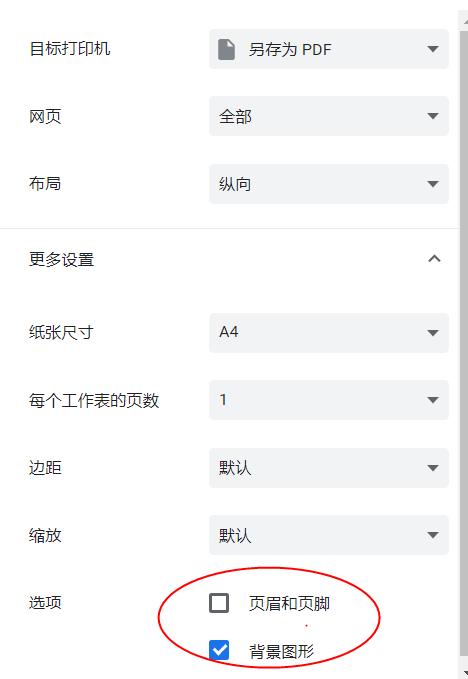
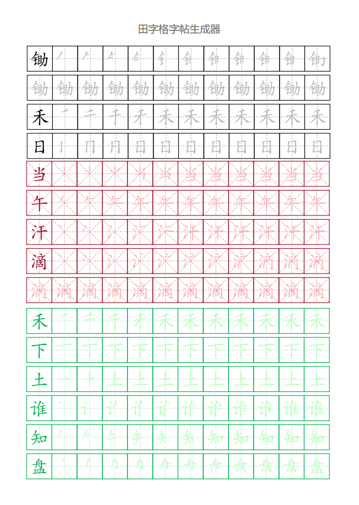

田字格字帖 米字格字帖 支持笔顺 支持拼音 在线字帖生成器
本站基于开源项目:
https://github.com/bunian/tianzigebishun
田字格米字格字帖生成器，低年级学生练字神器，
共收录9574个常用汉字！
本系统可以在线生成田字格、米字格
完全免费
。田字格是最精简的练习格，被小学低年级语文课本作为生字词的展示方式。小学时期，特别是低年级阶段，是学习汉字书写的关键时期，使用本站生成田字格字帖，让低年级小学生逐渐将汉字写规范，养成正确的汉字笔顺书写习惯，给以后的语文学习和汉字书写打下坚实的基础。
2021年1月更新：*附小学生常用汉字分年级生字表（共计2513个汉字）
2022年5月更新：添加注音功能! Thanks for https://github.com/jifei/Pinyin
第一次使用建议阅读下方教程!
请输入想要生成的汉字：
锄禾日当午，汗滴禾下土。 谁知盘中餐，粒粒皆辛苦。
田格类型：
田字格
米字格
田格颜色：
绿色
黑色
红色
文字颜色：
绿色
黑色
红色
描红背景：
非常深
深
较深
略浅
适中
非常浅
笔顺剩余填充：
是
否
显示拼音：
是
否
自定义页头：
教程：
1、为保证打印效果，请使用微软Edge浏览器、谷歌浏览器，建议字体为楷体；
2、输入想打印的文字，去除空格，逗号句号等常见符号会自动过滤；
3、设置选项后，点击生成按钮；
4、打印设置勾选打印背景图片（*注：如下图）。

效果图：
